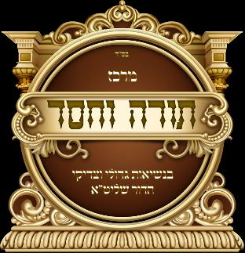
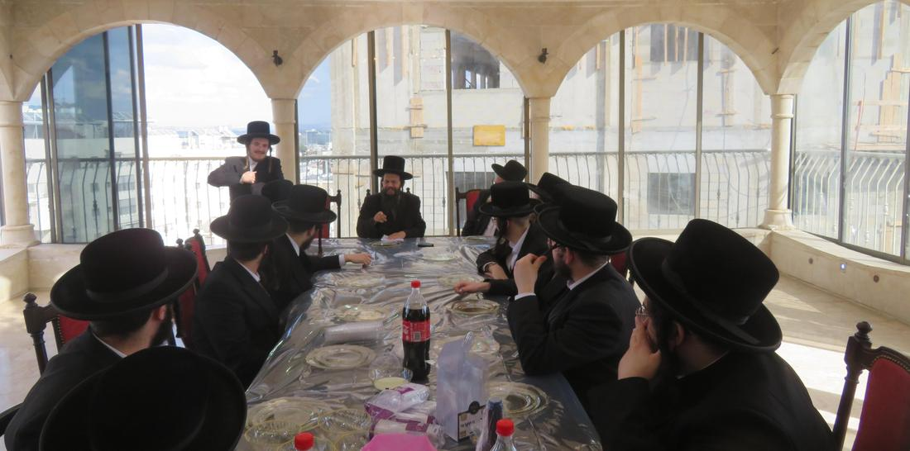

לימוד
כוללים לאברכים
עשרות אברכים חשובים שוקדים על תלמודם מדי יום ביומו במסגרת הכוללים, בסדרים קבועים ובמעמדי סיום על מסכתות.

מרכז תורה וחסד
עולם חסד יבנה
במפעלות רבבות
עשרות אברכים שוקדים על תלמודם בכוללי המרכז, מאות בחורים ואברכים ניגשים למבחנים בבין הזמנים, וצעירים רחוקים מתקרבים בחברותא אישית — לצד ביקורי חולים ועידוד חזרה על הלימוד.


לימוד
עשרות אברכים חשובים שוקדים על תלמודם מדי יום ביומו במסגרת הכוללים, בסדרים קבועים ובמעמדי סיום על מסכתות.

חזרה
מפעל שנועד להפוך את החזרה על הלימוד לדבר קבוע — מעקב, עידוד ומענקים לחוזרים על תלמודם, כדי שהלימוד יישאר ולא יישכח.
מבחנים
„שיהיו דברי תורה מחודדין בפיך” — עשרות בחורי חמד ואברכים ניגשים למבחנים על דפי גמרא ורש״י בימי בין הזמנים, עם פרסים ומעמדי חלוקה.
קירוב
חברותות אישיות ושיעורים לצעירים רחוקים מתורה ומצוות, במסגרות קבועות באזור המרכז — קשר אישי לאורך זמן, לא מפגש חד־פעמי.
חסד
ביקורים קבועים אצל חולים בבתי החולים — חיזוק, סיוע מעשי, וקשר אנושי חם למי שנמצא בימים לא פשוטים.
מענה
קו ייחודי מסוגו: מענה אנושי — לא מוקלט — לשאלות בכל חלקי התורה, לכל פונה, בכל שעה.
מָה אָהַבְתִּי תוֹרָתֶךָ, כָּל הַיּוֹם הִיא שִׂיחָתִי
תהילים קי״ט, צ״זכל מפעל כאן עומד על שותפים. שותפות במרכז תורה וחסד מחזיקה אברכים בסדרי הלימוד, מבחנים לבחורים בבין הזמנים, וחברותא לצעיר שמתקרב.